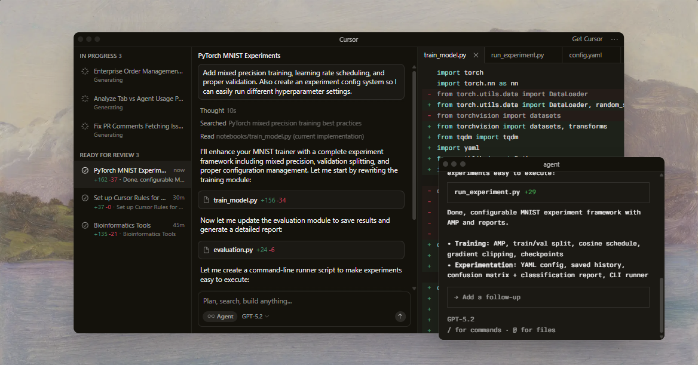
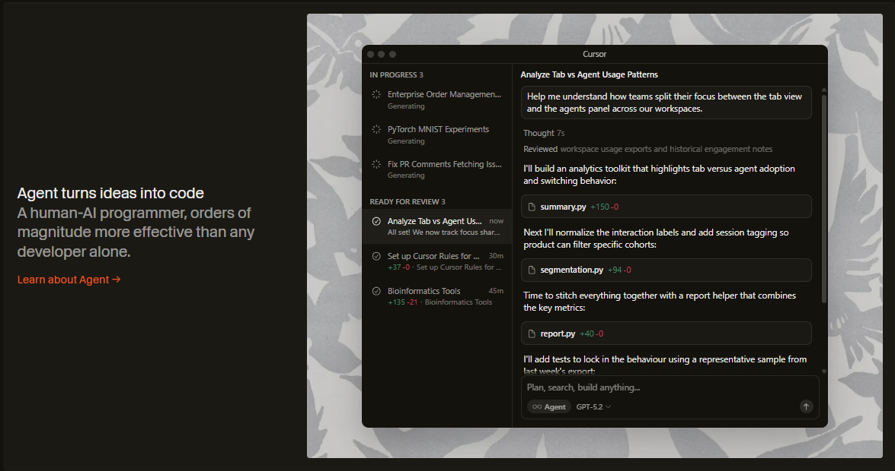
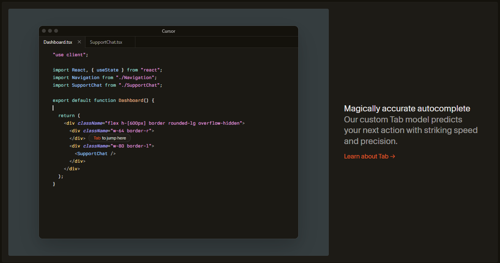
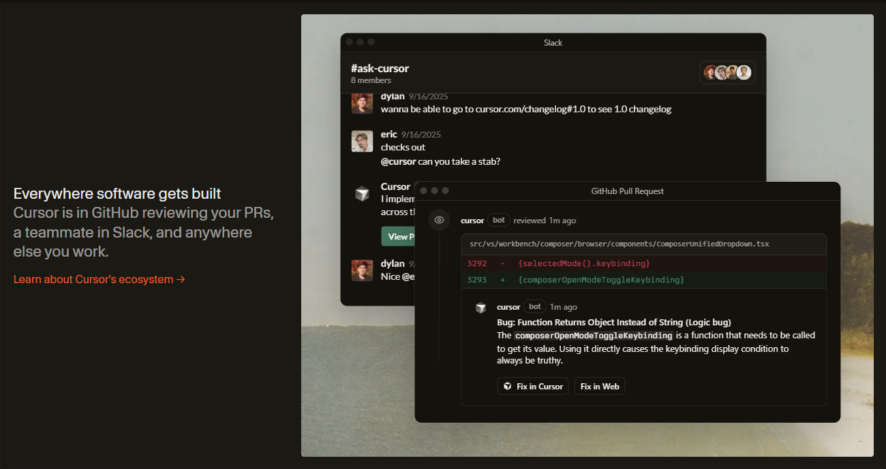
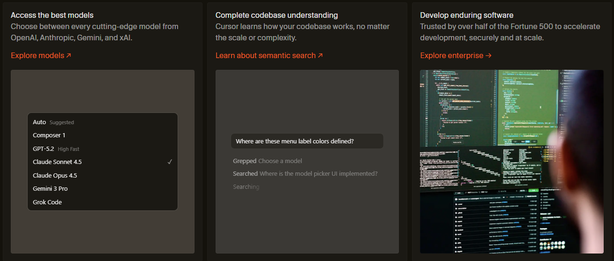

Trusted every day by millions of professional developers.


Built to make you extraordinarily productive,
Cursor is the best way to code with AI.

Trusted every day by millions of professional developers.



The new way to build software.
It was night and day from one batch to another, adoption went from single digits to over 80%. It just spread like wildfire, all the best builders were using Cursor.
Diana Hu
General Partner, Y combinator
The most useful AI tool that I currently pay for, hands down, is Cursor. It's fast, autocompletes when and where you need it to, handles brackets properly, sensible keyboard shortcuts, bring-your-own-model... everything is well put together..
shadcn
creator of shadcn/ui
The best LLM applications have an autonomy slider: you control how much independence to give the AI. In Cursor, you can do Tab completion, Cmd+K for targeted edits, or you can let it rip with the full autonomy agentic version.
Andrej Karpathy
CEO, Eureka Labs
Cursor quickly grew from hundreds to thousands of extremely enthusiastic Stripe employees. We spend more on R&D and software creation than any other undertaking, and there's significant economic outcomes when making that process more efficient and productive.
Patrick Collison
Co-Founder & CEO, Stripe
It's official.
I hate vibe coding.
I love Cursor tab coding.
It's wild.
ThePrimeagen
@ThePrimeagen
It's definitely becoming more fun to be a programmer. It's less about digging through pages and more about what you want to happen. We are at the 1% of what's possible, and it's in interactive experiences like Cursor where models like GPT-5 shine brightest.
Greg Brockman
President, OpenAI
Stay on the frontier

Changelog
Jan 22, 2026
Subagents, Skills, and Image Generation
Jan 16, 2026
CLI Agent Modes and Cloud Handoff
Jan 8, 2026
New CLI Features and improves CLI Performance
Dec 22, 2025
Layout Customization and Stability Improvements
See what's new in Cursor →
Cursor is an applied research team focused on building the future of software development.
Join Us →

Recent Highlights
Towards self-driving codebases
We're making a part of our multi-agent research harness available to try today in preview.
Research· Feb 5, 2026
Salesforce ships higher-quality code across 20,000 developers with Cursor
Over 90% of developers at Salesforce now use Cursor, driving double-digit improvements in cycle time, PR velocity, and code quality.
Customers· Jan 21, 2026
Best practices for coding with agents
A comprehensive guide to working with coding agents, from starting with plans to managing context, customizing workflows, and reviewing code.
Product· Jan 9, 2026
View more posts →
Product
Agents
Enterprise
Code review
Tab
CLI
Cloud Agents
Pricing
Resources
Download
Changelog
Docs
Forums
Status
Company
Careers
Blog
Community
Students
Brands
Anysphere
Legal
Terms of service
Privacy Policy
Data Use
Security
Connect
X
Youtube